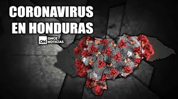
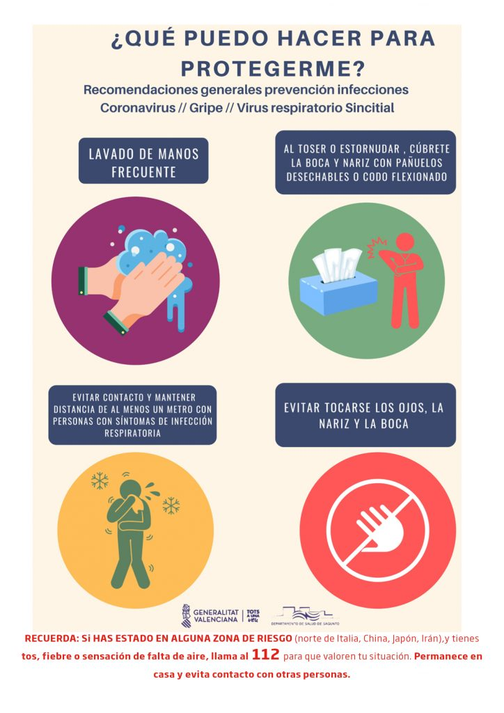

La COVID-19 es la enfermedad infecciosa causada por el coronavirus que se ha descubierto más recientemente. Tanto este nuevo virus como la enfermedad que provoca eran desconocidos antes de que estallara el brote en Wuhan (China) en diciembre de 2019. Actualmente la COVID-19 es una pandemia que afecta a muchos países de todo el mundo.
¿Cuáles son los síntomas de la COVID-19?
Los síntomas más habituales de la COVID-19 son la fiebre, la tos seca y el cansancio. Otros síntomas menos frecuentes que afectan a algunos pacientes son los dolores y molestias, la congestión nasal, el dolor de cabeza, la conjuntivitis, el dolor de garganta, la diarrea, la pérdida del gusto o el olfato y las erupciones cutáneas o cambios de color en los dedos de las manos o los pies. Estos síntomas suelen ser leves y comienzan gradualmente. Algunas de las personas infectadas solo presentan síntomas levísimos.
La mayoría de las personas (alrededor del 80%) se recuperan de la enfermedad sin necesidad de tratamiento hospitalario. Alrededor de 1 de cada 5 personas que contraen la COVID-19 acaba presentando un cuadro grave y experimenta dificultades para respirar. Las personas mayores y las que padecen afecciones médicas previas como hipertensión arterial, problemas cardiacos o pulmonares, diabetes o cáncer tienen más probabilidades de presentar cuadros graves. Sin embargo, cualquier persona puede contraer la COVID-19 y caer gravemente enferma. Las personas de cualquier edad que tengan fiebre o tos y además respiren con dificultad, sientan dolor u opresión en el pecho o tengan dificultades para hablar o moverse deben solicitar atención médica inmediatamente. Si es posible, se recomienda llamar primero al profesional sanitario o centro médico para que estos remitan al paciente al establecimiento sanitario adecuado.
¿Qué debo hacer si tengo síntomas de COVID-19 y cuándo he de buscar atención médica?
Si tiene síntomas leves, como tos o fiebre leves, generalmente no es necesario que busque atención médica. Quédese en casa, aíslese y vigile sus síntomas. Siga las orientaciones nacionales sobre el autoaislamiento. Sin embargo, si vive en una zona con paludismo (malaria) o dengue, es importante que no ignore la fiebre. Busque ayuda médica. Cuando acuda al centro de salud lleve mascarilla si es posible, manténgase al menos a un metro de distancia de las demás personas y no toque las superficies con las manos. En caso de que el enfermo sea un niño, ayúdelo a seguir este consejo.
Busque inmediatamente atención médica si tiene dificultad para respirar o siente dolor o presión en el pecho. Si es posible, llame a su dispensador de atención de la salud con antelación para que pueda dirigirlo hacia el centro de salud adecuado.
¿Cómo se propaga la COVID-19?
Una persona puede contraer la COVID-19 por contacto con otra que esté infectada por el virus. La enfermedad se propaga principalmente de persona a persona a través de las gotículas que salen despedidas de la nariz o la boca de una persona infectada al toser, estornudar o hablar. Estas gotículas son relativamente pesadas, no llegan muy lejos y caen rápidamente al suelo. Una persona puede contraer la COVID-19 si inhala las gotículas procedentes de una persona infectada por el virus. Por eso es importante mantenerse al menos a un metro de distancia de los demás. Estas gotículas pueden caer sobre los objetos y superficies que rodean a la persona, como mesas, pomos y barandillas, de modo que otras personas pueden infectarse si tocan esos objetos o superficies y luego se tocan los ojos, la nariz o la boca. Por ello es importante lavarse las manos frecuentemente con agua y jabón o con un desinfectante a base de alcohol.
La OMS está estudiando las investigaciones en curso sobre las formas de propagación de la COVID-19 y seguirá informando sobre las conclusiones que se vayan obteniendo.
¿Cómo podemos protegernos a nosotros mismos y a los demás si no sabemos quién está infectado?
Practicar la higiene respiratoria y de las manos es importante en TODO momento y la mejor forma de protegerse a sí mismo y a los demás.
Cuando sea posible, mantenga al menos un metro de distancia entre usted y los demás. Esto es especialmente importante si está al lado de alguien que esté tosiendo o estornudando. Dado que es posible que algunas personas infectadas aún no presenten síntomas o que sus síntomas sean leves, conviene que mantenga una distancia física con todas las personas si se encuentra en una zona donde circule el virus de la COVID-19.
CUIDATE DEL COVID SALVA TU VIDA

Cómo se propaga
En estos momentos no existe una vacuna para prevenir la enfermedad del coronavirus 2019 (COVID-19).???????
La mejor manera de prevenir la enfermedad es evitar la exposición a este virus.
Se cree que el virus se propaga principalmente de persona a persona..
Entre personas que están en contacto cercano (a una distancia de hasta aproximadamente 6 pies).
A través de gotitas respiratorias que se producen cuando una persona infectada tose, estornuda o habla.
Estas gotitas pueden terminar en la boca o en la nariz de quienes se encuentran cerca o posiblemente ser inhaladas y llegar a los pulmones.
Algunos estudios recientes sugieren que el COVID-19 puede propagarse a través de personas que no presentan síntomas.
Lavarse las manos frecuentemente
Lávese las manos con frecuencia con agua y jabón por al menos 20 segundos, especialmente después de haber estado en un lugar público, o después de sonarse la nariz, toser o estornudar.
Es de suma importancia que se lave:
Antes de comer o preparar la comida
Antes de tocarse la cara
Después de ir al baño
Después de salir de lugares públicos
Después de sonarse la nariz, toser o estornudar
Después de manipular su mascarilla
Después de cambiar pañales
Después de cuidar a una persona enferma
Después de tocar animales o mascotas
Si no dispone de agua y jabón, use un desinfectante de manos que contenga al menos un 60 % de alcohol. Cubra toda la superficie de las manos y frótelas hasta que las sienta secas.
Evite tocarse los ojos, la nariz y la boca sin haberse lavado las manos.
